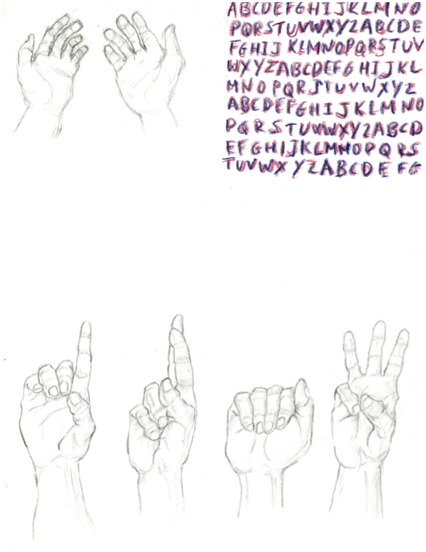

Sign languages are full human languages in their own right, complete with phonology, morphology, and syntax, and not simply gestures that stand in for spoken words (Klima & Bellugi, 1979). Over time, neuroscience has shown that the human brain is remarkably flexible in how it processes language. It turns out that the main language networks do not depend on whether communication arrives through the ears or the eyes. Instead, the brain focuses on patterns, structure, and grammar, which explains why sign languages are processed using many of the same systems that support spoken language (Emmorey, 2002).
One of the most striking discoveries is that the classic left hemisphere language regions, including areas associated with comprehension and production, activate when people use sign language. This happens in both deaf and hearing signers (Neville et al., 1998; Emmorey, 2002). In other words, the brain uses its main language systems regardless of whether language is spoken or signed. Still, sign languages rely on heavier use of space and movement, and the right hemisphere is engaged more than it typically is for spoken language. It helps with processing the visual layout of signing space and the spatial grammar that signers rely on (Emmorey, 2002).
Producing signs activates many of the same language planning regions as spoken language, but it uses different motor areas. Instead of coordinating lips, tongue, and vocal cords, the brain works with the manual articulators, guiding handshape, movement, and facial expressions. This shows how language and movement work together in signing, yet the deeper linguistic system stays largely the same.
Research with deaf children has revealed especially important insights into how flexible the developing brain can be. When children are born deaf, parts of the auditory cortex that would normally respond to sound begin responding strongly to visual information instead. This reorganization starts very early and helps support skills like visual attention (Neville et al., 1998). It is a powerful example of how the brain can make the most of whatever sensory input it receives during childhood.
Early exposure to a natural language plays an equally crucial role. Deaf children who grow up with sign language from birth typically develop the same left hemisphere language networks that hearing children develop for spoken language. But when children do not have consistent access to any language until later, their brains work harder and less efficiently during language tasks, and the child’s overall development can suffer (Mayberry, 2007). This pattern supports the idea that there is a critical period in childhood when the brain is especially ready to learn language. The deaf children’s brain requires the same stimulation of a language, regardless of whether it is spoken or signed.
Language also shapes many parts of thinking, including memory, attention, and reasoning. Children who grow up without a solid first language often show difficulty in these areas later in life. In contrast, deaf children who learn sign language early develop these skills on a typical timeline, further proving the necessity of language in terms of cognitive growth (Mayberry, 2007).
It is clear that the brain is built for language structure rather than speech sounds. Sign language studies show that human language is a flexible system that can adapt to visual or auditory forms while still using the same underlying systems. These findings highlight the importance of giving deaf children access to a rich, accessible language as early as possible. Doing so supports healthy brain development and prevents the long-term effects that can come from delayed language exposure. The brain uses a shared blueprint for language, but it can also reorganize in impressive ways depending on the child’s sensory experience. This combination reveals just how deeply rooted and yet flexible our language abilities are.
References
Emmorey, K. (2002). Language, Cognition, and the Brain: Insights from Sign Language Research. Lawrence Erlbaum.
Klima, E., & Bellugi, U. (1979). The Signs of Language. Harvard University Press.
Mayberry, R. I. (2007). When timing is everything: Age of acquisition effects on second-language learning. Bilingualism: Language and Cognition, 10(3), 279–299.
Neville, H. J., Bavelier, D., Corina, D., et al. (1998). Neural organization for language in deaf and hearing subjects. PNAS, 95, 922–929.